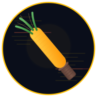

Language-aware file size linter. Patrols your code base to enforce per-language line count limits using tokei.
keep files in line$ linecop src/ VIOLATION src/handlers/api.rs language: Rust lines: 612 / 500 mode: total VIOLATION src/models/schema.rs language: Rust lines: 534 / 500 mode: total 2 violations in 47 files scanned
$ linecop src/ All clear. 47 files scanned, 0 violations.
Powered by tokei, LineCop recognizes 200+ languages. Set limits per language — 500 lines for Rust, 200 for Markdown, 400 for Python.
Count total lines, code-only, or code + comments. Choose the mode that matches your team’s conventions.
Need a higher limit for generated files? Exclude vendor code? Per-file glob patterns let you fine-tune enforcement.
Run linecop schema to get a JSON Schema for your config. Editor auto-completion in VS Code, Zed, and more.
Use --quiet --format json for machine-readable output. Non-zero exit code on violations, perfect for CI gates.
Run linecop init to generate a starter .linecop.yaml with sensible defaults. Tweak from there.
# .linecop.yaml
limits:
Rust: 500
Markdown: 200
Python: 400
count_mode: total # total | code | code-comments
overrides:
- pattern: "src/generated_*.rs"
limit: 1000
- pattern: "RESEARCH.md"
exclude: true
exclude_dirs:
- target
- node_modules$ linecop init Created .linecop.yaml $ linecop All clear. 23 files scanned, 0 violations. $ linecop --format json --quiet {"violations":[],"summary":{"files_scanned":23,"violations":0}}